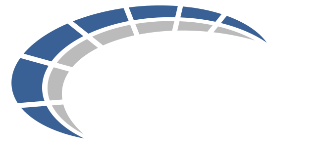

Você sabe vender o melhor lugar do estádio. AI cuida de tudo que não exige estar lá. Como o time global usa, e como usar certo.
E-mails, newsletters, copy de produto, captions sociais. Você começa de algo real, não do zero.
PT → EN → ES com velocidade. Decks, landing pages, descrição de pacote. Revisão humana antes de publicar.
Estrutura, talking points, one-pagers para liderança e cliente. A forma narrativa — não só bullet points.
Descrições de pacote, blurbs de hotel, listings Shopify. Tom consistente em 10+ produtos e 5 mercados.
Calendários, estruturas Gantt, outlines de brief. Alimente o contexto — receba o esqueleto. Você preenche o que só você sabe.
Briefings de destino, benchmarks de concorrente, contexto de evento. Sintetize rápido, cite a fonte.
Quando qualquer um do time pede pra AI escrever uma landing ou caption, ela não conhece nossas fontes, paleta, tom ou como escrevemos um subject line. O output é decente — mas não é inconfundivelmente ABSOLUT Sport.
O Design System está vivo agora — paleta, tipografia, logos, componentes e guidelines acessíveis em design.absolut-sport.com.br. Cole o link como contexto antes de prompar.
Mostre, não descreva. Cole um e-mail real ASB ou um post antes do prompt — deixe o modelo espelhar o que já funciona.
Antes de qualquer prompt, abra essas duas abas e cole os links como contexto. AI passa a falar ABSOLUT.
3 passos. Cada geografia mantém o que é seu.
Cada mercado é responsável pelos próprios assets. Sobe quem tem o lápis na mão.
PPT ou Figma — o que estiver no fluxo do time. O próximo precisa abrir e remixar.
.PPTX · .FIGVersão compartilhável pra apresentação, e-mail, WhatsApp. Quem precisa ver, vê. Quem precisa editar, abre o editável.
.PDFEscreve uma caption pra Final VIP.
🎉 Não perca a Final dos seus sonhos! Pacote VIP exclusivo com os melhores benefícios...
Caption · Final Libertadores · BsAs dez/26 · tom premium, urgente · público BR 25-45 · 3 linhas + CTA.
A Final é em Buenos Aires. Dezembro. Seu lugar ainda está aqui. Link na bio.
Escrita, pesquisa, planejamento, tradução, documentos estratégicos
Conceitos visuais e imagens de campanha (time BR)
Design system e templates globais (Raphael)
Resumos de projeto, drafts de tarefa, prep de reunião
Base de conhecimento interna. Pergunte sobre manuais e processos da ASB com respostas citadas.
Pesquisa com fontes verificadas. Para dados reais, não síntese genérica.
Output estruturado renderizável: planilhas, dashboards, documentos — direto no chat.
Automação de WhatsApp e Instagram. Fluxos inteligentes para escalar atendimento.
Evento, audiência, tom, prazo. Um parágrafo de contexto = 80% melhor output.
Sample real ASB: e-mail, caption, post. Deixe o modelo espelhar o que funciona.
Esqueleto primeiro. Seções e fluxo. Depois preencha o que só você sabe.
Duas rodadas no máximo. Aí você assume. Seu julgamento é o produto.
Tradução → nativo. Copy de cliente → Mauricio ou Jack primeiro.